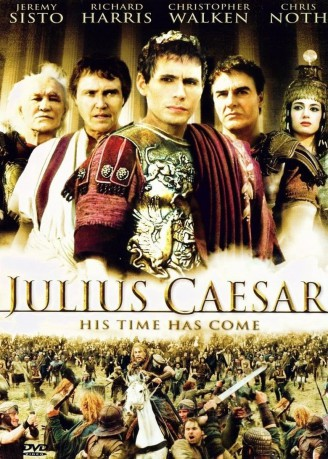

#9136 Julius Caesar
Alternativ: Caesar (Englischer Titel)
 
 IMDB-Wertung: 6.7 / 10
IMDB-Wertung: 6.7 / 10  Metascore: 0
Metascore: 0 
Er war der grösste Feldherr der Antike, begnadeter Demagoge und skrupelloser Machtpolitiker, aber auch ein leidenschaftlicher Liebhaber, der für die Frauen in seinem Leben jedes Risiko einging Die unglaubliche Lebensgeschichte Julius Cäsars bis zu seiner Ermordung im Jahr 44 v.Chr. Fast ein Vierteljahrhundert dauerte der Aufstieg Caesars zum Alleinherrscher über das römische Weltreich. Als Heerführer eroberte er Gallien und führte seine Truppen bis auf die britischen Inseln.
Jahr: 2002
Dauer: 177 Minuten
FSK: 12
Land: Niederlande Studio: Koch MediaTonspuren: DTS - ,
Untertitel:
Auflösung: 1080p (1920x1080) Größe: 13619 MB
Genre: Drama, Krieg, Geschichte, Biographie
Regisseur: Uli Edel
Drehbuch: Tair Mamedov
Soundtrack: Ruy Folguera, Carlo Siliotto
Darsteller:
 Jeremy Sisto als Gaius Julius Caesar
Jeremy Sisto als Gaius Julius Caesar Richard Harris als Lucius Cornelius Sulla
Richard Harris als Lucius Cornelius Sulla Christopher Walken als Marcus Portius Cato
Christopher Walken als Marcus Portius Cato Valeria Golino als Calpurnia
Valeria Golino als Calpurnia Chris Noth als Pompey
Chris Noth als Pompey- Pamela Bowen als Aurelia
 Heino Ferch als Vercingetorix
Heino Ferch als Vercingetorix Tobias Moretti als Caius Cassius
Tobias Moretti als Caius Cassius- Nicole Grimaudo als Julia
 Sean Pertwee als Labienus
Sean Pertwee als Labienus- Ian Duncan als Marcus Brutus
- Kate Steavenson-Payne als Portia
 Manuel Cauchi als Cinna (2002)
Manuel Cauchi als Cinna (2002) Constantine Gregory als Pythias
Constantine Gregory als Pythias- Richard James als Play Actor
- Christian Kohlund als Lepidus
- David Langham als Play Actor
- Jay Rodan als Marc Antony
- Christopher Simon als Sulla's Soldier
 Clive Merrison als Catullus (uncredited)
Clive Merrison als Catullus (uncredited)- Samuela Sardo als Cleopatra
- Daniela Piazza als Cornelia
- Paolo Briguglia als Marcus Portius
- Anna Cachia als Wife of Cato
- Brenda Camilleri als Cleopatra's attendant
- Anthony Ellul als Butcher
- Christopher Ettridge als Appolonius
- Portelli Paul als Baker (2002)
- Frank Pisani als Actor
Datei: X:\2002\Julius Caesar (2002, FSK12, 1920x1080).mkv seit 19.07.2018
Festplatte: HD 1996-2002
 Es gibt insgesamt 93 Filme in der Gruppe '2002'
Es gibt insgesamt 93 Filme in der Gruppe '2002'